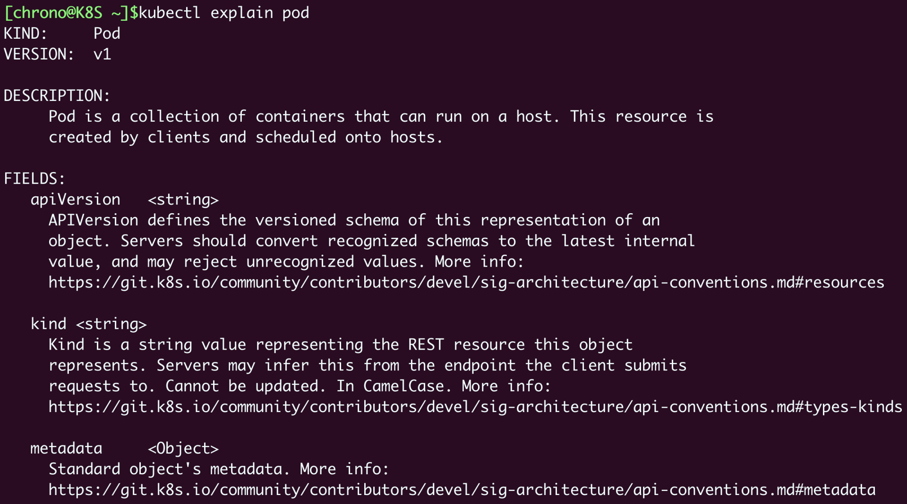

- 00 开篇词 迎难而上，做云原生时代的弄潮儿.md
- 00 课前准备 动手实践才是最好的学习方式.md
- 01 初识容器：万事开头难.md
- 02 被隔离的进程：一起来看看容器的本质.md
- 03 容器化的应用：会了这些你就是Docker高手.md
- 04 创建容器镜像：如何编写正确、高效的Dockerfile.md
- 05 镜像仓库：该怎样用好Docker Hub这个宝藏.md
- 06 打破次元壁：容器该如何与外界互联互通.md
- 07 实战演练：玩转Docker.md
- 08 视频：入门篇实操总结.md
- 09 走近云原生：如何在本机搭建小巧完备的Kubernetes环境.md
- 10 自动化的运维管理：探究Kubernetes工作机制的奥秘.md
- 11 YAML：Kubernetes世界里的通用语.md
- 12 Pod：如何理解这个Kubernetes里最核心的概念？.md
- 13 Job_CronJob：为什么不直接用Pod来处理业务？.md
- 14 ConfigMap_Secret：怎样配置、定制我的应用.md
- 15 实战演练：玩转Kubernetes（1）.md
- 16 视频：初级篇实操总结.md
- 17 更真实的云原生：实际搭建多节点的Kubernetes集群.md
- 18 Deployment：让应用永不宕机.md
- 19 Daemonset：忠实可靠的看门狗.md
- 20 Service：微服务架构的应对之道.md
- 21 Ingress：集群进出流量的总管.md
- 22 实战演练：玩转Kubernetes（2）.md
- 23 视频：中级篇实操总结.md
- 24 PersistentVolume：怎么解决数据持久化的难题？.md
- 25 PersistentVolume + NFS：怎么使用网络共享存储？.md
- 26 StatefulSet：怎么管理有状态的应用？.md
- 27 滚动更新：如何做到平滑的应用升级降级？.md
- 28 应用保障：如何让Pod运行得更健康？.md
- 29 集群管理：如何用名字空间分隔系统资源？.md
- 30 系统监控：如何使用Metrics Server和Prometheus？.md
- 31 网络通信：CNI是怎么回事？又是怎么工作的？.md
- 32 实战演练：玩转Kubernetes（3）.md
- 33 视频：高级篇实操总结.md
- 加餐 docker-compose：单机环境下的容器编排工具.md
- 加餐 谈谈Kong Ingress Controller.md
- 结束语 是终点，更是起点.md
11 YAML：Kubernetes世界里的通用语
你好，我是Chrono。
在上次课里，我们一起研究了Kubernetes的内部架构和组成，知道它分为控制面和数据面。控制面管理集群，数据面跑业务应用，节点内部又有apiserver、etcd、scheduler、kubelet、kube-proxy等组件，它们互相协作来维护整个集群的稳定运行。
这套独特的Master/Node架构是Kubernetes得以安身立命的根本，但仅依靠这套“内功心法”是不是就能够随意仗剑走天涯了呢？
显然不行。就像许多武侠、玄幻作品里的人物一样，Kubernetes也需要一份“招式秘籍”才能把自己的“内功”完全发挥出来，只有内外兼修才能够达到笑傲江湖的境界。
而这份“招式秘籍”，就是Kubernetes世界里的标准工作语言YAML，所以今天，我就来讲讲为什么要有YAML、它是个什么样子、该怎么使用。
声明式与命令式是怎么回事
Kubernetes使用的YAML语言有一个非常关键的特性，叫“声明式”（Declarative），对应的有另外一个词：“命令式”（Imperative）。
所以在详细了解YAML之前，我们得先来看看“声明式”与“命令式”这两种工作方式，它们在计算机世界里的关系有点像小说里的“剑宗”与“气宗”。
我们在入门篇里学习的Docker命令和Dockerfile就属于“命令式”，大多数编程语言也属于命令式，它的特点是交互性强，注重顺序和过程，你必须“告诉”计算机每步该做什么，所有的步骤都列清楚，这样程序才能够一步步走下去，最后完成任务，显得计算机有点“笨”。
“声明式”，在Kubernetes出现之前比较少见，它与“命令式”完全相反，不关心具体的过程，更注重结果。我们不需要“教”计算机该怎么做，只要告诉它一个目标状态，它自己就会想办法去完成任务，相比起来自动化、智能化程度更高。
这两个概念比较抽象，不太好理解，也是Kubernetes初学者经常遇到的障碍之一。Kubernetes官网上特意以空调为例，解说“声明式”的原理，但我感觉还是没有说得太清楚，所以这里我就再以“打车”来形象地解释一下“命令式”和“声明式”的区别。

假设你要打车去高铁站，但司机不熟悉路况，你就只好不厌其烦地告诉他该走哪条路、在哪个路口转向、在哪里进出主路、停哪个站口。虽然最后到达了目的地，但这一路上也费了很多口舌，发出了无数的“命令”。很显然，这段路程就属于“命令式”。
现在我们来换一种方式，同样是去高铁站，但司机经验丰富，他知道哪里有拥堵、哪条路的红绿灯多、哪段路有临时管控、哪里可以抄小道，此时你再多嘴无疑会干扰他的正常驾驶，所以，你只要给他一个“声明”：我要去高铁站，接下来就可以舒舒服服地躺在后座上休息，顺利到达目的地了。
在这个“打车”的例子里，Kubernetes就是这样的一位熟练的司机，Master/Node架构让它对整个集群的状态了如指掌，内部的众多组件和插件也能够自动监控管理应用。
这个时候我们再用“命令式”跟它打交道就不太合适了，因为它知道的信息比我们更多更全面，不需要我们这个外行去指导它这个内行，所以我们最好是做一个“甩手掌柜”，用“声明式”把任务的目标告诉它，比如使用哪个镜像、什么时候运行，让它自己去处理执行过程中的细节。
那么，该用什么方式去给Kubernetes发出一个“声明”呢？
容器技术里的Shell脚本和Dockerfile可以很好地描述“命令式”，但对于“声明式”就不太合适了，这个时候，我们需要使用专门的YAML语言。
什么是YAML
YAML语言创建于2001年，比XML晚了三年。XML你应该知道吧，它是一种类似HTML的标签式语言，有很多繁文缛节。而YAML虽然在名字上模仿了XML，但实质上与XML完全不同，更适合人类阅读，计算机解析起来也很容易。
YAML的官网（https://yaml.org/）有对语言规范的完整介绍，所以我就不在这里列举语言的细节了，只讲一些与Kubernetes相关的要点，帮助你快速掌握。
你需要知道，YAML是JSON的超集，支持整数、浮点数、布尔、字符串、数组和对象等数据类型。也就是说，任何合法的JSON文档也都是YAML文档，如果你了解JSON，那么学习YAML会容易很多。
但和JSON比起来，YAML的语法更简单，形式也更清晰紧凑，比如：
- 使用空白与缩进表示层次（有点类似Python），可以不使用花括号和方括号。
- 可以使用
#书写注释，比起JSON是很大的改进。 - 对象（字典）的格式与JSON基本相同，但Key不需要使用双引号。
- 数组（列表）是使用
-开头的清单形式（有点类似MarkDown）。 - 表示对象的
:和表示数组的-后面都必须要有空格。 - 可以使用
---在一个文件里分隔多个YAML对象。
下面我们来看几个YAML的简单示例。
首先是数组，它使用 - 列出了三种操作系统：
# YAML数组(列表)
OS:
- linux
- macOS
- Windows
这段YAML对应的JSON如下：
{
"OS": ["linux", "macOS", "Windows"]
}
对比可以看到YAML形式上很简单，没有闭合花括号、方括号的麻烦，每个元素后面也不需要逗号。
再来看一个YAML对象，声明了1个Master节点，3个Worker节点：
# YAML对象(字典)
Kubernetes:
master: 1
worker: 3
它等价的JSON如下：
{
"Kubernetes": {
"master": 1,
"worker": 3
}
}
注意到了吗YAML里的Key都不需要使用双引号，看起来更舒服。
把YAML的数组、对象组合起来，我们就可以描述出任意的Kubernetes资源对象，第三个例子略微复杂点，你可以自己尝试着解释一下：
# 复杂的例子，组合数组和对象
Kubernetes:
master:
- apiserver: running
- etcd: running
node:
- kubelet: running
- kube-proxy: down
- container-runtime: [docker, containerd, cri-o]
关于YAML语言的其他知识点我就不再一一细说了，都整理在了这张图里，你可以参考YAML官网，在今后的课程中慢慢体会。

什么是API对象
学到这里还不够，因为YAML语言只相当于“语法”，要与Kubernetes对话，我们还必须有足够的“词汇”来表示“语义”。
那么应该声明Kubernetes里的哪些东西，才能够让Kubernetes明白我们的意思呢？
作为一个集群操作系统，Kubernetes归纳总结了Google多年的经验，在理论层面抽象出了很多个概念，用来描述系统的管理运维工作，这些概念就叫做“API对象”。说到这个名字，你也许会联想到上次课里讲到的Kubernetes组件apiserver。没错，它正是来源于此。
因为apiserver是Kubernetes系统的唯一入口，外部用户和内部组件都必须和它通信，而它采用了HTTP协议的URL资源理念，API风格也用RESTful的GET/POST/DELETE等等，所以，这些概念很自然地就被称为是“API对象”了。
那都有哪些API对象呢？
你可以使用 kubectl api-resources 来查看当前Kubernetes版本支持的所有对象：
kubectl api-resources

在输出的“NAME”一栏，就是对象的名字，比如ConfigMap、Pod、Service等等，第二栏“SHORTNAMES”则是这种资源的简写，在我们使用kubectl命令的时候很有用，可以少敲几次键盘，比如Pod可以简写成po，Service可以简写成svc。
在使用kubectl命令的时候，你还可以加上一个参数 --v=9，它会显示出详细的命令执行过程，清楚地看到发出的HTTP请求，比如：
kubectl get pod --v=9

从截图里可以看到，kubectl客户端等价于调用了curl，向8443端口发送了HTTP GET 请求，URL是 /api/v1/namespaces/default/pods。
目前的Kubernetes 1.23版本有50多种API对象，全面地描述了集群的节点、应用、配置、服务、账号等等信息，apiserver会把它们都存储在数据库etcd里，然后kubelet、scheduler、controller-manager等组件通过apiserver来操作它们，就在API对象这个抽象层次实现了对整个集群的管理。
如何描述API对象
现在我们就来看看如何以YAML语言，使用“声明式”在Kubernetes里描述并创建API对象。
之前我们运行Nginx的命令你还记得吗？使用的是 kubectl run，和Docker一样是“命令式”的：
kubectl run ngx --image=nginx:alpine
我们来把它改写成“声明式”的YAML，说清楚我们想要的Nginx应用是个什么样子，也就是“目标状态”，让Kubernetes自己去决定如何拉取镜像运行：
apiVersion: v1
kind: Pod
metadata:
name: ngx-pod
labels:
env: demo
owner: chrono
spec:
containers:
- image: nginx:alpine
name: ngx
ports:
- containerPort: 80
有了刚才YAML语言知识“打底”，相信你基本上能够把它看明白，知道它是一个Pod，要使用nginx:alpine镜像创建一个容器，开放端口80，而其他的部分，就是Kubernetes对API对象强制的格式要求了。
因为API对象采用标准的HTTP协议，为了方便理解，我们可以借鉴一下HTTP的报文格式，把API对象的描述分成“header”和“body”两部分。
“header”包含的是API对象的基本信息，有三个字段：apiVersion、kind、metadata。
-
apiVersion表示操作这种资源的API版本号，由于Kubernetes的迭代速度很快，不同的版本创建的对象会有差异，为了区分这些版本就需要使用apiVersion这个字段，比如v1、v1alpha1、v1beta1等等。
-
kind表示资源对象的类型，这个应该很好理解，比如Pod、Node、Job、Service等等。
-
metadata这个字段顾名思义，表示的是资源的一些“元信息”，也就是用来标记对象，方便Kubernetes管理的一些信息。
apiVersion: v1 kind: Pod metadata: name: ngx-pod labels: env: demo owner: chrono
比如在这个YAML示例里就有两个“元信息”，一个是name，给Pod起了个名字叫 ngx-pod，另一个是labels，给Pod“贴”上了一些便于查找的标签，分别是 env 和 owner。
apiVersion、kind、metadata都被kubectl用于生成HTTP请求发给apiserver，你可以用 --v=9 参数在请求的URL里看到它们，比如：
https://192.168.49.2:8443/api/v1/namespaces/default/pods/ngx-pod
和HTTP协议一样，“header”里的apiVersion、kind、metadata这三个字段是任何对象都必须有的，而“body”部分则会与对象特定相关，每种对象会有不同的规格定义，在YAML里就表现为 spec 字段（即specification），表示我们对对象的“期望状态”（desired status）。
还是来看这个Pod，它的spec里就是一个 containers 数组，里面的每个元素又是一个对象，指定了名字、镜像、端口等信息：
spec:
containers:
- image: nginx:alpine
name: ngx
ports:
- containerPort: 80
现在把这些字段综合起来，我们就能够看出，这份YAML文档完整地描述了一个类型是Pod的API对象，要求使用v1版本的API接口去管理，其他更具体的名称、标签、状态等细节都记录在了metadata和spec字段等里。
使用 kubectl apply、kubectl delete，再加上参数 -f，你就可以使用这个YAML文件，创建或者删除对象了：
kubectl apply -f ngx-pod.yml
kubectl delete -f ngx-pod.yml
Kubernetes收到这份“声明式”的数据，再根据HTTP请求里的POST/DELETE等方法，就会自动操作这个资源对象，至于对象在哪个节点上、怎么创建、怎么删除完全不用我们操心。
如何编写YAML
讲到这里，相信你对如何使用YAML与Kubernetes沟通应该大概了解了，不过疑问也会随之而来：这么多API对象，我们怎么知道该用什么apiVersion、什么kind？metadata、spec里又该写哪些字段呢？还有，YAML看起来简单，写起来却比较麻烦，缩进对齐很容易搞错，有没有什么简单的方法呢？
这些问题最权威的答案无疑是Kubernetes的官方参考文档（https://kubernetes.io/docs/reference/kubernetes-api/），API对象的所有字段都可以在里面找到。不过官方文档内容太多太细，查阅起来有些费劲，所以下面我就介绍几个简单实用的小技巧。
第一个技巧其实前面已经说过了，就是 kubectl api-resources 命令，它会显示出资源对象相应的API版本和类型，比如Pod的版本是“v1”，Ingress的版本是“networking.k8s.io/v1”，照着它写绝对不会错。
第二个技巧，是命令 kubectl explain，它相当于是Kubernetes自带的API文档，会给出对象字段的详细说明，这样我们就不必去网上查找了。比如想要看Pod里的字段该怎么写，就可以这样：
kubectl explain pod
kubectl explain pod.metadata
kubectl explain pod.spec
kubectl explain pod.spec.containers

使用前两个技巧编写YAML就基本上没有难度了。
不过我们还可以让kubectl为我们“代劳”，生成一份“文档样板”，免去我们打字和对齐格式的工作。这第三个技巧就是kubectl的两个特殊参数 --dry-run=client 和 -o yaml，前者是空运行，后者是生成YAML格式，结合起来使用就会让kubectl不会有实际的创建动作，而只生成YAML文件。
例如，想要生成一个Pod的YAML样板示例，可以在 kubectl run 后面加上这两个参数：
kubectl run ngx --image=nginx:alpine --dry-run=client -o yaml
就会生成一个绝对正确的YAML文件：
apiVersion: v1
kind: Pod
metadata:
creationTimestamp: null
labels:
run: ngx
name: ngx
spec:
containers:
- image: nginx:alpine
name: ngx
resources: {}
dnsPolicy: ClusterFirst
restartPolicy: Always
status: {}
接下来你要做的，就是查阅对象的说明文档，添加或者删除字段来定制这个YAML了。
这个小技巧还可以再进化一下，把这段参数定义成Shell变量（名字任意，比如$do/$go，这里用的是$out），用起来会更省事，比如：
export out="--dry-run=client -o yaml"
kubectl run ngx --image=nginx:alpine $out
今后除了一些特殊情况，我们都不会再使用 kubectl run 这样的命令去直接创建Pod，而是会编写YAML，用“声明式”来描述对象，再用 kubectl apply 去发布YAML来创建对象。
小结
好了，今天就到这里，我们一起学习了“声明式”和“命令式”的区别、YAML语言的语法、如何用YAML来描述API对象，还有一些编写YAML文件的技巧。
Kubernetes采用YAML作为工作语言是它有别与其他系统的一大特色，声明式的语言能够更准确更清晰地描述系统状态，避免引入繁琐的操作步骤扰乱系统，与Kubernetes高度自动化的内部结构相得益彰，而且纯文本形式的YAML也很容易版本化，适合CI/CD。
再小结一下今天的内容要点：
- YAML是JSON的超集，支持数组和对象，能够描述复杂的状态，可读性也很好。
- Kubernetes把集群里的一切资源都定义为API对象，通过RESTful接口来管理。描述API对象需要使用YAML语言，必须的字段是apiVersion、kind、metadata。
- 命令
kubectl api-resources可以查看对象的apiVersion和kind，命令kubectl explain可以查看对象字段的说明文档。 - 命令
kubectl apply、kubectl delete发送HTTP请求，管理API对象。 - 使用参数
--dry-run=client -o yaml可以生成对象的YAML模板，简化编写工作。
课下作业
最后是课下作业时间，给你留两个思考题：
- 你是如何理解“命令式”和“声明式”的？为什么说空调是“声明式”的？
- 使用
--v=9参数，试着解释一下YAML是如何被kubectl转换成HTTP请求的。
欢迎在留言区分享你的思考，从今天开始我们就要习惯写YAML来创建对象了，如果学习过程中有任何问题也欢迎留言提问，我会第一时间回复你。下节课再见。

© 2019 - 2023 Liangliang Lee. Powered by Vert.x and hexo-theme-book.